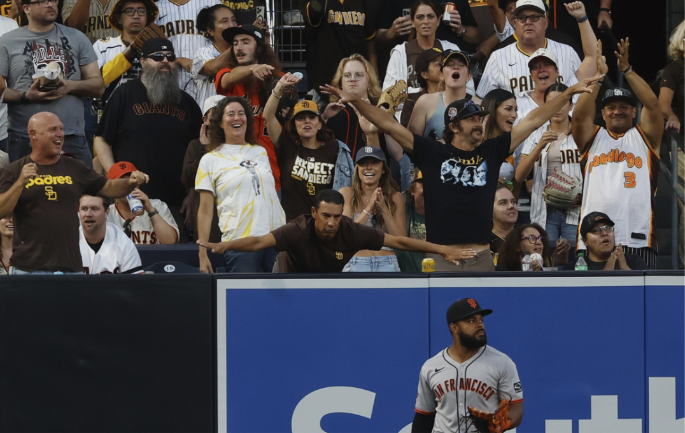
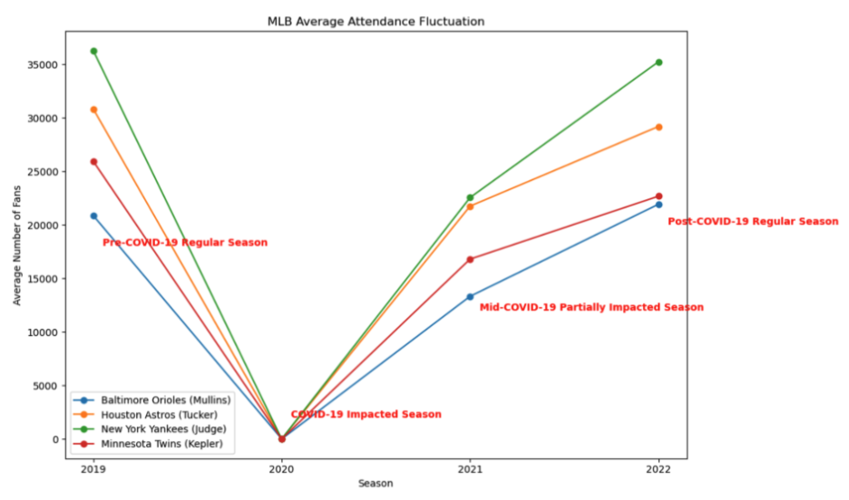
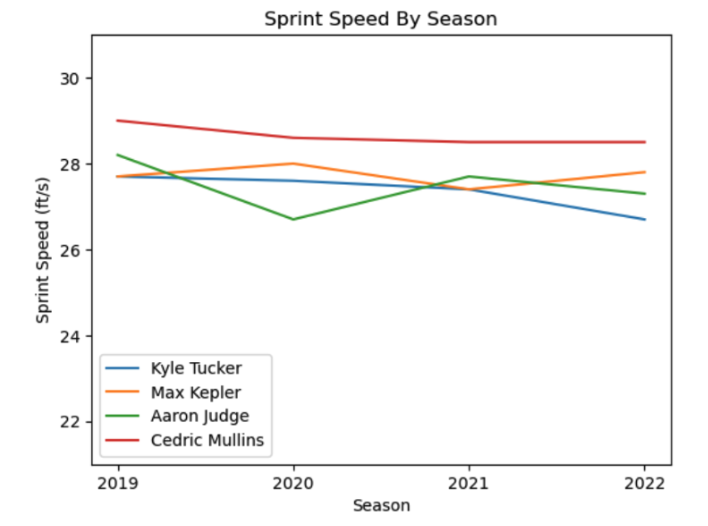
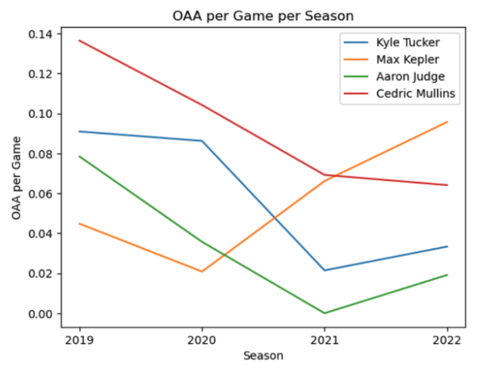
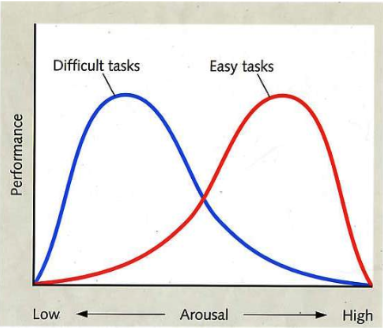

Are Players Better with Fans? A Case Study of Defense and Social Facilitation
By Lucia Kim | June 11, 2026

Introduction
This past summer, I got a ticket in the outfield section at Petco Park for a Padres vs Giants game. Sitting in the first row, it was the closest I have ever been to the players. This game took place just after the game where Xander Bogaerts’s home run was overturned for fan interference, upsetting many Padres fans.
A couple directed their frustration to Heliot Ramos, the player who attempted to catch Bogaerts’s ball, and also happened to be playing as a left fielder, in close proximity to the fans. The contrast between boos aimed at Ramos during his defense and cheers for the Padres made me wonder: Does the presence of an audience, either supportive or not, actually influence an athlete’s performance?
In 1965, psychologist Robert Zajonc proposed a theory of social facilitation, stating that "the emission of well-learned responses is facilitated by the presence of spectators, while the acquisition of new responses is impaired" (Zajonc 270). He states that a “well-learned response” becomes one's correct dominant response while a new learning response likely leads to mistakes and errors. Since professional baseball players undergo intense year-round training, their performances can be classified as “well-learned responses.” Thus, If Zajonc’s theory applies to these athletes, their performances should improve in the presence of fans, whether they are receiving cheers, boos, or both. Any reaction from the crowd should trigger a physiological “drive”, which will be covered in more detail soon in the article, leading to an improvement of their “well-learned”, dominant response.
Data Analysis

To test this hypothesis with minimal confounding variables, data was collected from four outfielders who played for the same team in the same defensive position, and had no major injuries from 2019 to 2022: Kyle Tucker, Max Kepler, Aaron Judge, and Cedric Mullins. The 2020 COVID-19 season, where audiences were prohibited, is selected as a control group to make comparisons with regular seasons. Since the 2021 season allowed a limited number of fans, the 2022 season is also included to ensure data from a fully recovered post-covid season. The defensive metric chosen to measure defense abilities is Outs Above Average (OAA), which calculates how many outs a player has saved relative to the difficulty of the play and other players. The goal is to reveal a potential relationship between defense and fan presence with the analysis of pre-, during, and post-empty stadium seasons.

Before analyzing individual fielding metrics, it is crucial to eliminate external factors that may fluctuate performances. For instance, age could be a declining factor. For both defense and baserunning, players train to maintain fast, consistent sprints. Defense, especially for outfielders, requires vigilantly tracking the ball and quickly maneuvering the field accordingly. With balls traveling at a fast speech followed by strong pitches, sprinting is an essential skill. As athletes age, they are prone to a slower sprint speed due to decreased muscle mass and joint health issues, affecting one’s ability to defend.
The graph above depicts the sprint speeds for these four outfielders as measured by Statcast. Although a slight drop was shown for Aaron Judge in 2020, he returned to a steady sprint speed in the following seasons, while the rest maintained their speed throughout all four years. Judge suffered from a stress fracture in his right rib and right calf strain during the 2020 season, which explains his outlying data and used for future reference, if needed. Overall, the consistent sprint speeds suggests that a decline in these players’ performances throughout the four seasons are not due to physical aging.

The multiple line graphs above illustrate a clear decline in OAA per game for all four outfielders when transitioning from 2019 to the empty 2020 season. Besides Max Kepler, this downward trend continues to the 2021 season, which also started with a limited allowance of fans. Followed by Kepler in 2021, Judge and Tucker bounced back, increasing their OAA per game from 2021 to 2022, but not to the levels they reached pre-COVID 19.
According to the data, Mullins represents the outlier, depicting a continuous decrease in OAA per game starting in 2019. His OAA per game was 0.052 in 2023 and 0.014 for the following season. The continuous decline suggests an external factor beyond the presence of fans. For instance, his small sample size of games played in 2019 (22 games) and a listed right groin strain in 2023 likely contributed to the following results.
The Psychological Aspect
Although not all players followed the exact same trajectory with outliers even, the notable drop in OAA per game from 2019 to 2020, even until 2021, suggests that fans play a role in players’ performances. Zajonc introduced the concept of “drive”, one’s state of physiological arousal that enhances the emission of dominant response (Zajonc 270). Spectators trigger this state of arousal for the players, which turns on their correct dominant response, which they’ve been trained repetitively for years.
Zajonc referenced a similar experiment performed by another psychologist, L.E. Travis, to support his claim. Travis had participants familiarize themselves with pursuit-rotor tasks, following a moving target with a stylus on one hand. Once they gained familiarity, the skills with and without audiences of upperclassmen and graduate students were assessed. With over ten trials, the results showed a clear improvement in scores in the presence of audiences. Although sports fans are more active in comparison to the audiences in the experiment, who were merely observing, Travis’s research still supports the impact of others on one’s ability, which in this scenario, impact of audiences on baseball players.

Focusing on baseball, players mainly undergo a series of independent, private, and team training sessions. While independent and private sessions allow customization of specific developments, team training is crucial for repetitive in-play drills. Before performing in a stadium with crowds-filled bleachers, players initially practice in isolation or with teammates, then with opponents at practice games. This gradual shift of audience sizes allow players to be familiar with newly acquired skills and tune performances to a correct dominant response. When a player masters their skills, the presence of crowds, which acts as a “drive”, will amplify their performance.
It is intuitive that cheers and chants are signs of support and would improve performances. However, hostile expressions seem to pass on similar psychological effects as well. Instead of as intimidations, boos are taken lightly and even supplied a motivation trigger. A shortstop, Carlos Correa, once even said how fans booing him is just “gasoline in his Ferrari.” Correa, just like other professional players, undergo repetitive training and game-like drills, where the game is nothing far different from the tasks he has been practicing. Supported by Zajonc’s claims, Correa’s “drive” is triggered by the active audiences, which increased his performance of his well-learned dominant response.
Conclusion
Ultimately, this case study suggests that the 2020 COVID-19 season did make an impact on the defensive performances of the four players. When isolating players from the crowds, their OAA per game dropped in comparison to seasons with fan presence. The consistent sprint speeds rule out the aging and physical deterioration as a possible factor, bringing in the psychological influence of spectators.
It is highly plausible to make a connection between fans and players’ physiological “drive”. Those who show up to games, whether to support or to disapprove, serve as a trigger to turn this arousal. For professional baseball players who spent countless years deliberately improving and perfecting details of their skills, audiences are the essential catalysis to produce their “well-learned” dominant responses.
Bringing it back to Heliot Ramos at Petco Park, it is highly likely that the blunt frustration of Padres fans served as a fuel for Ramos to perform at a higher level. Although it is difficult to draw a clear conclusion from a small case study, the data and Zajonc’s psychological theories altogether suggest fans who visit stadiums have significance to the performance of players.
References
https://www.jstor.org/stable/1715944?seq=6
https://www.espn.com/mlb/attendance/_/year/2019
https://www.audacy.com/wcbs880/sports/new-york-yankees/carlos-correa-soaks-up-yankees-fans-boos-again